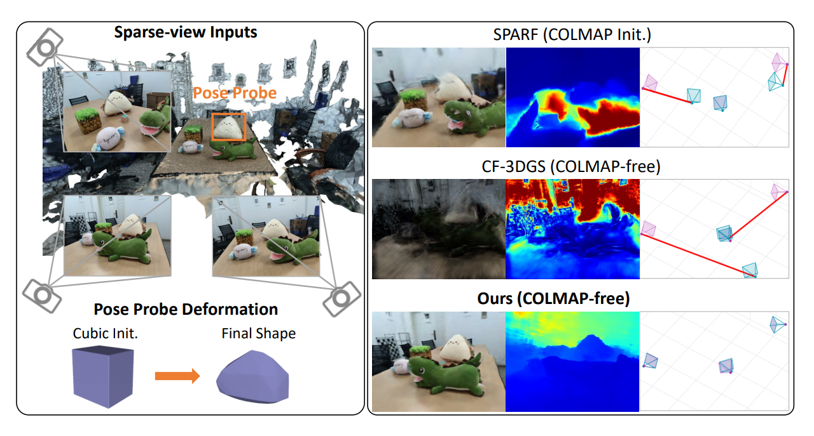

Zhirui GaoPh.D. Student
School of Computer Science and Technology [Curriculum Vitae] [Google Scholar] [GitHub] [WeChat] |
|
👤 Biography
Hi there👋, my name is Zhirui Gao (in Chinese: 高志锐).
I am a third-year Ph.D. student of
National University of Defense Technology, supervised by
Prof. Kai Xu, Prof. Wei Chen and Assoc.Prof. Renjiao Yi.
From 2017 to 2021, I earned my Bachelor's degree from China University of Geosciences. I am interested in 3D vision and graphics，
including 3D reconstruction, neural rendering (NeRF/3DGS), and AIGC.
I'm always open to research discussions and collaborations. Feel free to 📲contact me if you are interested.
📢 News
- [2025-07] Our paper BoxFusion is available on arxiv.
- [2025-06] Two papers are accepted by ICCV2025! (PartGS and CurveGaussian).
- [2025-02] Our paper PoseProbe is accepted by IEEE TSCVT.
- [2023-12] Our paper Fdc-nerf is accepted by ICASSP (Oral), thanks for Huachen.
- [2023-06] Our paper 2d3d-matr is accepted by ICCV2023!
- [2023-04] Our paper Delving Into Crispness is accepted by TIP!
- [2023-03] Our paper NEF is accepted by CVPR2023!
- [2023-01] Our paper Deep Template Matching is accepted by IEEE CVMJ!
📑 Selected Publications [Google Scholar]
|
arXiv 2025
|
|
|
ICCV 2025
|
|
|
ICCV 2025

|
|
|
IEEE TCSVT 2025

|
|
|
ICCV 2023
|
|
|
CVPR 2023
|
|
|
CVMJ 2024
|
|
|
IEEE TIP 2023
|
|
📠Educations
-
Ph.D. student, College of Computer Science, National University of Defense Technology2023 - present
-
Master, College of Computer Science, National University of Defense Technology2021 - 2022
-
B.Eng., College of Computer Science, China University of Geosciences2017 - 2021
- GPA: 4.08/5.00; Average Score: 91.5/100
- Comprehensive Ranking: 1/151
🆠Honors & Awards
-
Second Prize Scholarship2024
-
First Prize Freshman Scholarship2023
-
Outstanding Graduate of China University of Geosciences, Top 5%2021
-
Outstanding Degree Thesis of China University of Geosciences, Top 5%2021
-
National Encouragement Scholarship, Top 5%2019,2020
-
Silver Medal of ACM-ICPC2019
-
National Scholarship, Top 2%, Ministry of Education (the highest honor scholarship in China)2018
📠Services
- Conference Reviewer: ICCV2025， MM2025
- Journal Reviewer: TCSVT
© Zhirui Gao